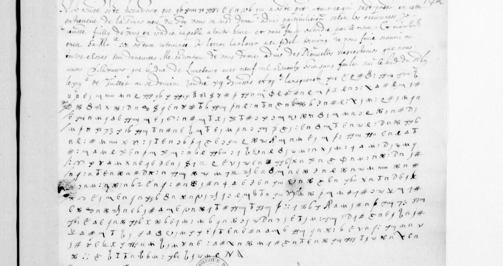

. Wikimedia Commons, public domain.")


01 The two records
| DECODE | folio | date | what it is | signs | read |
|---|---|---|---|---|---|
| R4162 | f. 119 | 27 May 1587 | one page, 42 lines wholly in cipher | 1,861 | 95.5% |
| R4165 | f. 142 | 20 June 1587 | a slip: seven clear lines of news from Germany, then 16 lines of cipher | 616 letter signs + 7 code groups | 92.9% |
DECODE gives no sender. Lasry’s key calls the cipher “Guise → Mercœur” and Tomokiyo writes “probably from the Duke of Guise”. The texts fit: the writer speaks for the League’s war effort, of “la cause que nous poursuivons de mon costé” and of a meeting at Meaux, and the companion letter f. 78 names “mon frere”. The same cipher is used in ff. 27 and 78 of this volume and in fr. 15565 ff. 105 and 122.
02 The letter of 27 May 1587 (f. 119)
A condensed reading, in the manuscript’s spelling; the full line-by-line text with every gap is guise1587/f119_reading.txt. Nomenclator words are in small capitals in the files; [?] marks an unread sign, [21] a name code.
[…] receu la lettre qu’il vous a pleu m’escrire […] de son armee, qui est icy present […] vous rendre compte et mander la façon […], feray ce comme nous avons resolu de nous y gouverner […] certainement […] l’envie et pense les tiens que toute asseuree et resolue la levee des reistres; […] d’aoust nous avrons sans doubte deux mil lances italiennes ou albanoises et quatre mil reistres soubs la levee de ce […] [21], lesquels les leve pour nous. Il a envoye son secretaire vers […] le colonel Fifer avec douze mil escus pour arrester et traicter d’une levee de neuf mil suisses, auquel nous n’avons eu encore response et l’attendons a toutes heures. Et [le]dict duc [21] s’est aussi resolu a […] mil cinq cens hommes, qui […] tant […] d’España la voisins, que au sien advis nous avrons […]; que ses parans et amys vouloit que l’accompagner et servir.
L’armee des heretiques de la grand […] des composee d’huict mil reistres, douze mil suisses, deux regimens de lansquenets, quatre mil harquebusiers pour Chastillon, leur doibt amener de cavallerie françoise, ce qu’ils pourront. Les vous dirons que les craignent trop plus: les traistres pour les ennemis, et le doubte […] si nous ne nous resolvons a nous en defaire, ce qu’est tant utile pour la gloire de Dieu et la cause que nous poursuivons de mon coste. Les […] espargner rien, soing ny diligence, et fault tous que nous en general et en particulier nous en cherchions les moyens. Il se faict fort et leve des gens de tous costes; il fault user de diligence […], les a traicter amitie ny reconciliation. Il ne se peult […] doibt, nous estant sa haine beau profitable, que la reputation generale et la conservation particuliere de nos amys […]. C’est un grand malheur que […] eschauffe davantage, et que sur luy l’on ne peult prendre plus ferme fondement. Toutesfois est il utile l’entretenir et entier, ce que […] […] il s’estoit employe […] mal a propos, car enfin c’estoit se rendre vangeur et […] passions qui sont ennemis des compagnons [& N], vous seul et leur respect, et peult et doit conserver. Nous avons […] deux […] [43] et de [M]ercoer […] a leur donner tout et contentement qu’il sera possible, comme […] toutes les autres villes des partisans [9b] et [71] son frere, comme je vous ay desia mande. Vous doit rendre compte […] subjects […] nule […], […]donne vous servir hors de toutes considerations […] vous une bien […] et moyens, et faictes moy […] particulierement en quoy vous voulez employer, en faisant estat certain. Les vous baise bien humblement les mains.
The Protestant army described is the German and Swiss force that the Huguenot party was raising in 1587 and which crossed into Lorraine in August; Châtillon is François de Coligny, the Admiral’s son, who led its French contingent. “Colonel Fifer” is Ludwig Pfyffer of Lucerne, the Catholic Swiss colonel who raised regiments for the League. The name codes [21], [43], [71] are not in Lasry’s key and are left as numbers.
03 The letter of 20 June 1587 (f. 142)

The clear lines give news from Germany: the duke of Lunebourg with nine thousand horse will be on the Rhine by 20 July. The cipher (full text guise1587/f142_reading.txt):
[…] de […] par, jusques icy a est[é] tousiours se monstre incredule. La ceste levee […] deust tant avancer, et encor […] il a este […] il n’a plus de six semaines, a asseurance que [73] […] ce, la levee [de] mil lances et quatre mil reistres, qui est ung instable secours; et a si bien faict par des resolutions precipitees, nous sommes maintenant contraincts [de] donner ordre a nos affaires, qui ne peuvent estre avec telles seuretez […] si nos premiers desseings eussent este effectuez avec ordre et mesure. […] faire ce qui […] possible, et dans cinq ou six jours j’espere avoir resolu la chose […] bon avec [73], les forces qui seront necessaires allant la trouver a Meaux, ou il m’a donn[é] […] aller veoir la cest effect. Et je ne faudray a vous en mander toutes nouvelles, et vous baise tres humblement les mains.
[73] is probably a person the writer is to meet with troops at Meaux; the pronoun “la trouver” suggests a woman, perhaps the Queen Mother, who was negotiating with the League princes in the summer of 1587, but the code is not in Lasry’s key and the identification is not made here.
04 Method
- Prior art. The DECODE records (created 2023) carry no key and no decipherment. Cryptiana’s page on Lasry’s BnF solutions lists ff. 27, 78, 119 and 142 under “Duke of Guise? in BnF fr. 15564 and fr. 15565” and gives the key table (
GL_BnFfr15564.png) and the decipherment of f. 27 only. - Transcription. Every sign labelled from Gallica full-resolution crops: 1,861 signs on f. 119, 623 on f. 142. Nomenclator groups (ff-ligatures for common words, digits for names) count as one sign.
- Decoding. Lasry’s key gives two to seven signs per letter, several of them near-identical shapes. A beam search over each label’s candidate letters under the
fr-1600-letters5-gram model gave a first French text (about 70% sense). - Pinning. About twenty passes of three lines each at 2× zoom, comparing each sign with the key and fixing the letter where shape and word agree; a candidate-class phrase search over the French corpora for the last runs (it found arrester, cherchions, en faisant estat, jusques icy).
- Key extensions in this hand, beyond Lasry’s sheet: the hooked sign = D or “de”; ✝ = Q; ɤ = D, T or X; the x-shape = Y or N; 3/ʒ = C or D; 8 = M, B, N or T; the dotted Є = R; ʃ = A; “=ʃ” = P.
- Measurement. Each reading file carries, per line, the number of signs and the number unread; the totals give 95.5% (f. 119) and 92.9% (f. 142), 95.1% of letter signs together.
05 What stays open
- 121 letter signs of 2,477, scattered, no run longer than eight: each was retried in three or more zoomed passes and a phrase search. A few look like two-sign code groups (“98”, “89”, “z3”) rather than letters. Longest gaps: f. 142 line 1 (eight signs after “de”, including two ff-groups from Lasry’s unknown row), f. 119 line 3 (four), line 27 (“que [five] eschauffé”).
- Name codes: [21] (twice, a duke), [43], [71] (with “son frere”), [73] (twice, f. 142), [N], [&], [9b], and the groups ffv, ffσ, ffx, ffou. None is in Lasry’s table; each occurs once or twice.
- Grades: the passages quoted above are H (sign-true); words in the full files marked with ? or in brackets are C or M; the identifications of Pfyffer and Châtillon are historical, not from the cipher.
06 Sources
- BnF, français 15564, ff. 119 and 142: Gallica view 132 (f. 119, right) and view 155 (f. 142, right).
- DECODE records R4162 and R4165.
- George Lasry’s key (2022), published by Satoshi Tomokiyo, Cryptiana, “Solutions by George Lasry”, section “Duke of Guise? in BnF fr.15564 and fr.15565”.
- Companion letters: f. 78, 16 April 1587; f. 151, the “MR” slip (a different cipher).
Transcriptions, reading files, decoders and notes: guise1587/ in the repository.